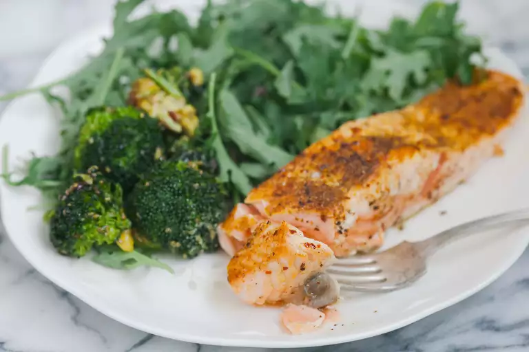

Super Simple Salmon

A super simple yet delicious recipe using only few
ingredients
Ingredients
- 1 tablespoon garlic powder
- 1 tablespoon dried basil
- ½ teaspoon salt
- 4 (6 ounce) fillets salmon
- 2 tablespoons butter
- 4 lemon wedges
Steps
- Stir garlic powder, basil, and salt together in a small bowl.
Rub the mixture evenly over salmon.
- Melt butter in a large skillet over medium heat. Add salmon
and cook until browned and flaky, about 5 minutes per side.
- Serve Salmon with lemon wedges.